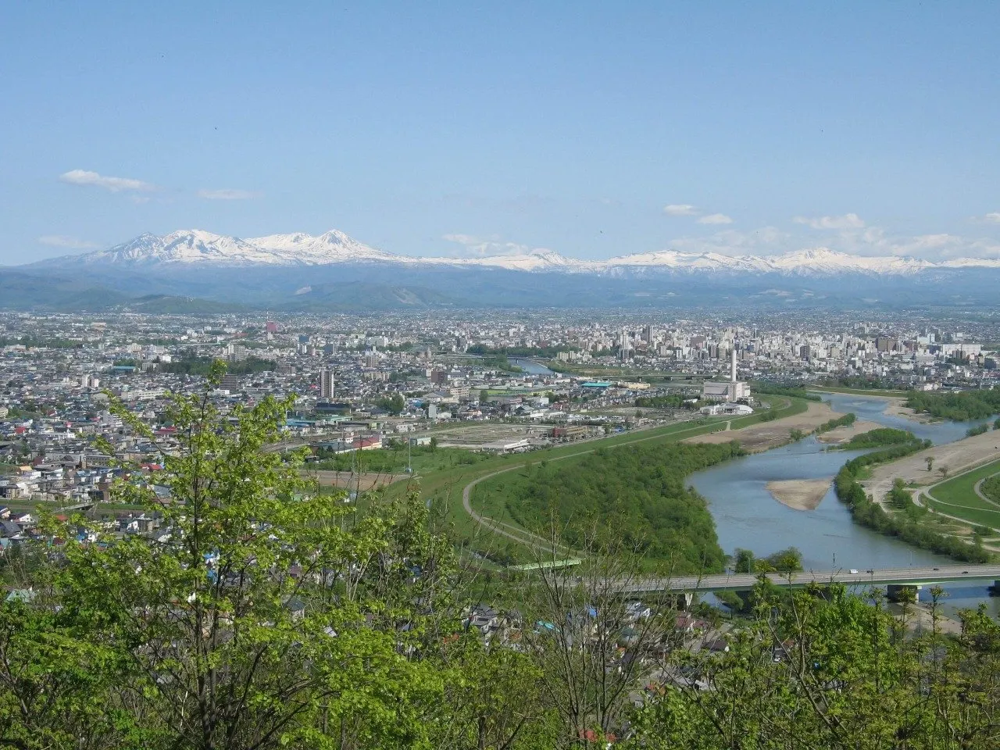
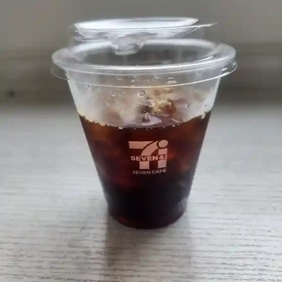
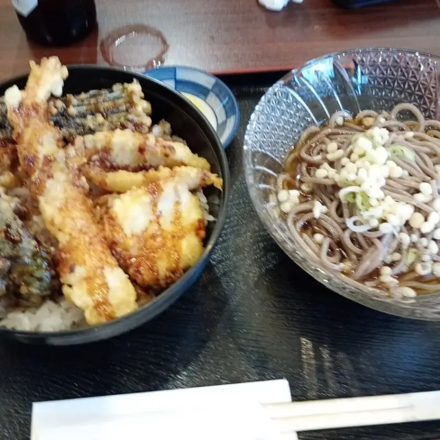
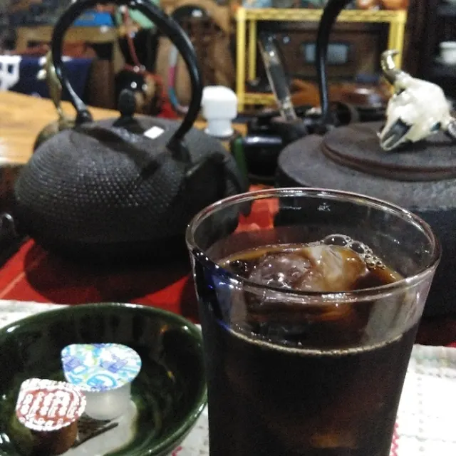
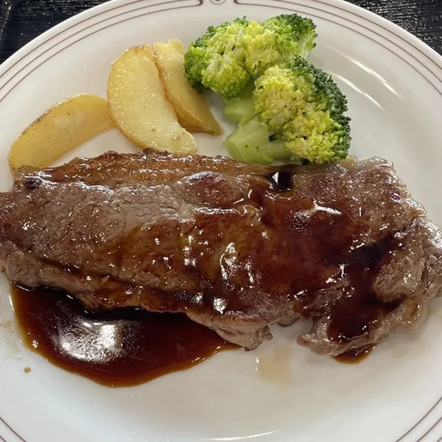
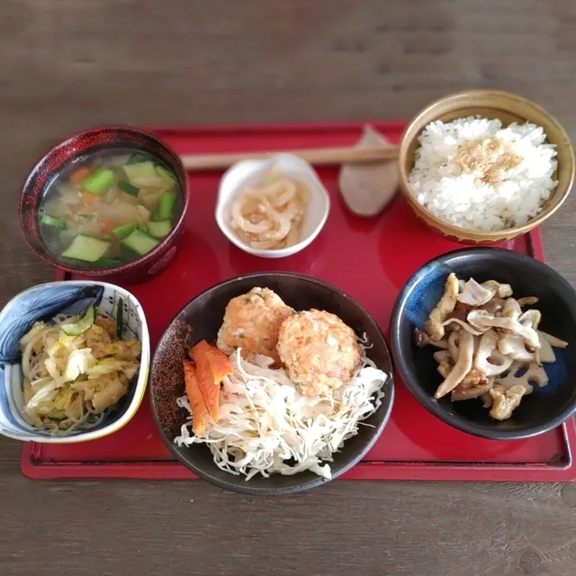
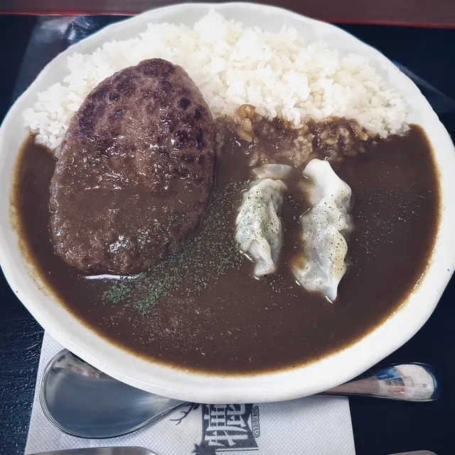
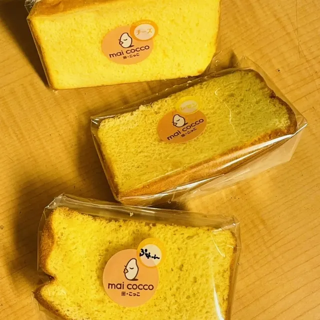
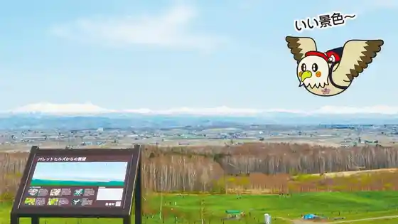
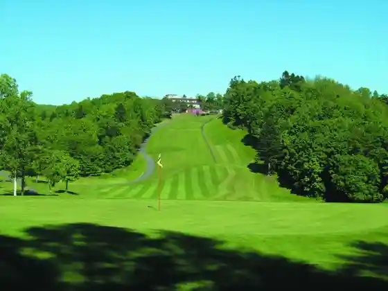

Takasu
Takasu · Hokkaido
Takasu
Highlighted on the Hokkaido map.

Stay
No bookable places to stay found in Takasu — nearest options in Pippu.
Dining
セブンイレブン 鷹栖北野店

Sebun'Irebun Takasu Kitano Mise
駒鮨 本店

Koma Sushi Honten
魔女来夢

Majo Raimu
ゆきちゃん食堂

Yukichan Shokudou
グレート旭川カントリー倶楽部

Gureeto Asahikawa Kantorii Kurabu
ぢま弁

Jima Ben
やました

Yamashita
米・こっこ

Kome Kokko
モゥーちゃん家
Mouu Chan Ie
煉瓦堂
Renga Dou
パン工房ミドリ エフ
Pan Koubou Midori Efu
NAMA果
Nama Ka
鷹の里
Taka No Sato
バイオアグリたかす
Baioaguri Takasu
山恵
Yama Megumi
レストラン 北斗七星
Resutoran Hokuto Nanae
焼き菓子店 THOREAU
Yaki Kashi Mise Thoreau
セント旭川ゴルフ倶楽部
Sento Asahikawa Gorufu Kurabu
コーヒー＆ランチ ひだまり
Koohii & Ranchi Hidamari
レストラン さん・さん
Resutoran San San
手作り豆腐料理の店 伝承館
Tezukuri Toufu Ryouri No Mise Denshou Kan
やき鳥居酒屋ふくい
Yaki Torii Sakaya Fukui
大八食堂
Daihachi Shokudou
PATATA Cafe
Patata Cafe
Sights
Arashiyama Lookout
Arashiyama Lookout
Parettohiruzu

Parettohiruzu
Asahikawa Takasu Gorufu Club

Asahikawa Takasu Gorufu Club